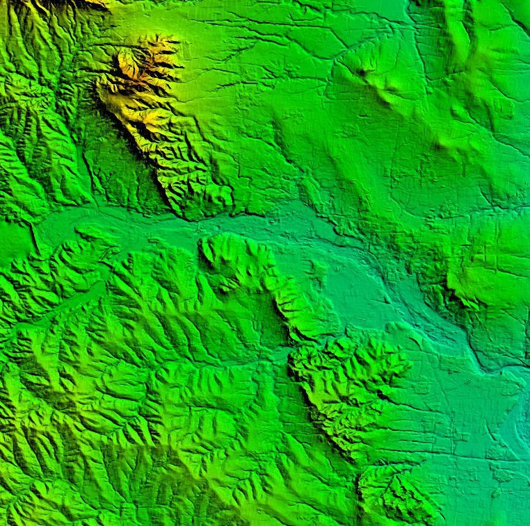
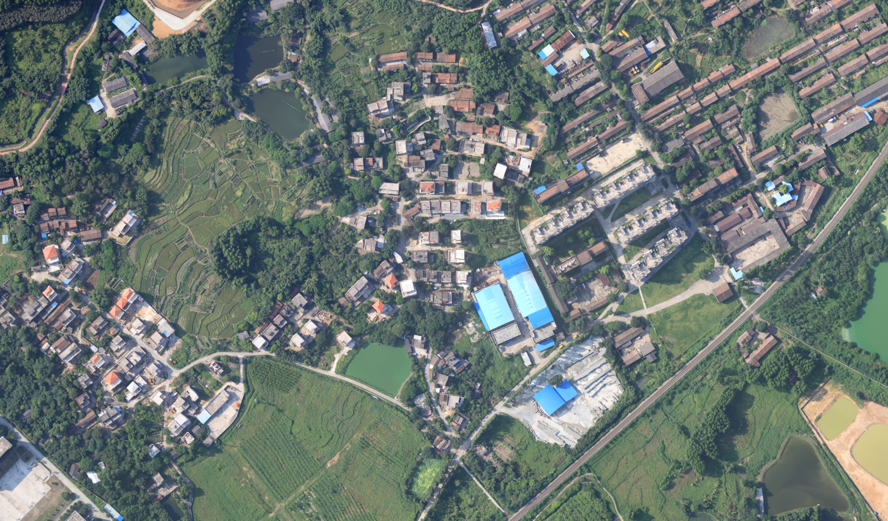
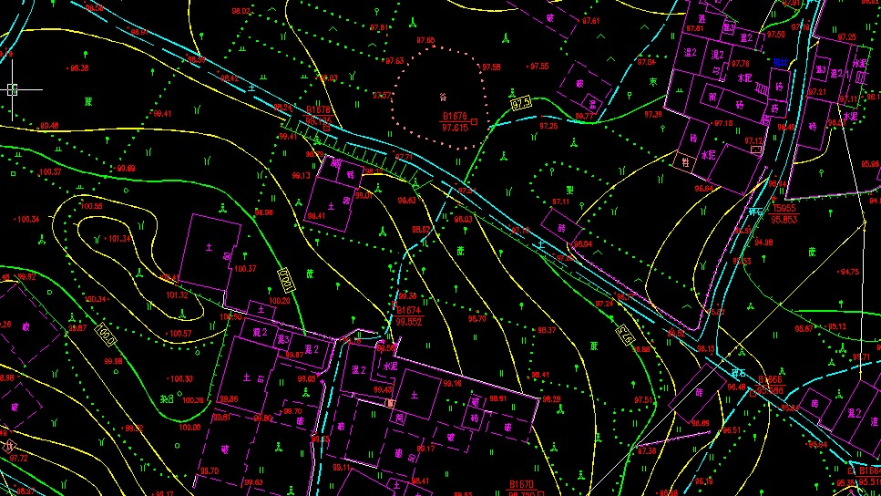
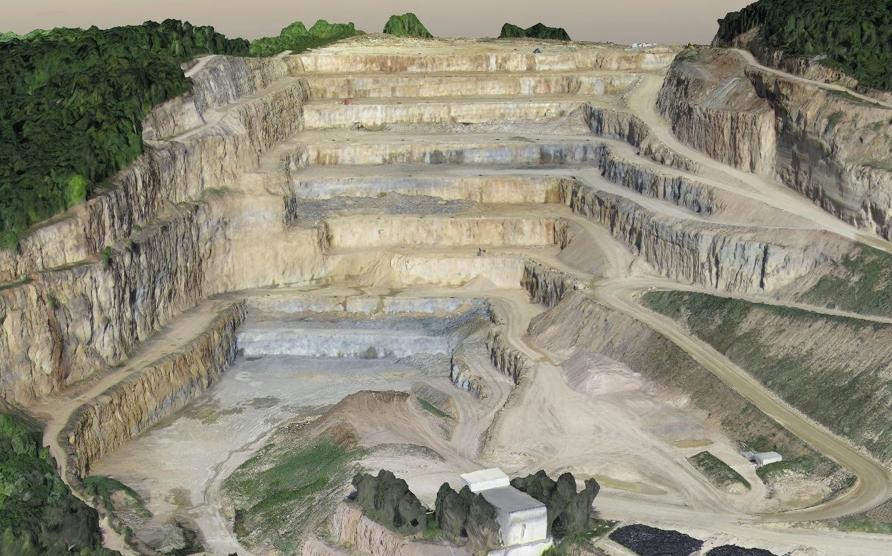

解决方案

DEM(Digital Elevation Model)
数字高程模型（Digital Elevation Model，缩写DEM）是一定范围内规则格网点的平面坐标（X，Y）及其高程（Z）的数据集，它主要是描述区域地貌形态的空间分布，是通过等高线或相似立体模型进行数据采集（包括采样和量测），然后进行数据内插而形成的。

DOM（Digital Orthophoto Map）
数字正射影像图（Digital Orthophoto Map，缩写DOM）是利用DEM对经过扫描处理的数字化航空像片或遥感影像（单色或彩色），经逐像元进行辐射改正、微分纠正和镶嵌，并按规定图幅范围裁剪生成的形象数据，带有公里格网、图廓（内、外）整饰和注记的平面图。
包含高清卫片、航片（精度可达3cm）等，也可队标志性建筑制作DOM。

DLG（Digital Line Graphic，数字线划地图）
DLG是与现有线划基本一致的各地图要素的矢量数据集，且保存了各要素间的空间关系信息和相关的属性信息，是4D产品的一种。我公司主要制作大比例尺DLG，包括1:500、1:1000、1：2000等。

三维模型
某露天采矿场三维模型：三维GIS可以对整个城市的三维立体空间进行统一描述，并充分准确地集成表达地下的地质、管线、构筑物，地上的土地、交通、建筑、植被，以及室内的设施、房产、人口等，形成与现实世界一致的三维立体空间框架，并以其开放性、可量测性和可挖掘性一并成为了信息化服务的基本要求，三维地图也因此成为人们跟空间信息交互的基本方式和各种门户网站信息服务的基本内容。
随着摄影测量技术的发展，倾斜摄影测量自动建模技术已趋近成熟，该技术是一项革命性建模技术，它的出现大大减少了人工成本和建模时间，提高建模的真实感，加速了三维GIS技术的发展。我公司利用在航空摄影测量方面的技术优势，在倾斜摄影测量自动建模方面取得重要突破，目前已有多项成功案例。